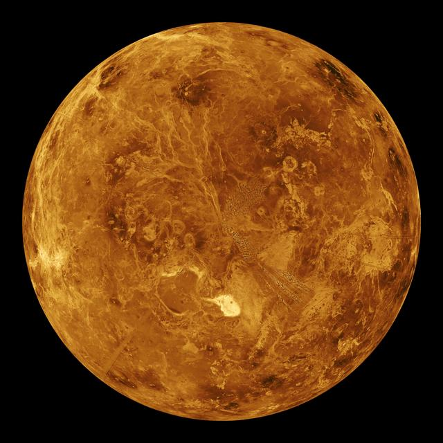

Venüsün atmosferinde yaşam olasılığı
Venüs’ün yüzeyinden yaklaşık 30 mil (50 kilometre) yüksekte, sıcaklıklar 86°F ile 158°F (30°C ile 70°C)
arasında değişir. Bu sıcaklık aralığı, Dünya’da ekstrem koşullarda yaşayan mikroorganizmalar için uygun
olabilir. Ayrıca, bu yükseklikteki atmosfer basıncı, Dünya yüzeyindeki basınca oldukça benzerdir.
Venüs’ün üst atmosferinde, bulutlar 224 mil/saat (360 km/saat) hızla esen rüzgarlarla çevrelenir. Bu
bulutların içinde kalıcı ve koyu renkli çizgiler bulunur. Bu çizgilerin neden kasırga kuvvetindeki
rüzgarlara rağmen bozulmadan kaldığı ve ultraviyole ışığı emme gibi özellikler gösterdiği henüz
açıklanamamıştır.
Bilim insanları bu çizgilerin oluşumuna dair birkaç teori öne sürmüştür. Bu teoriler arasında ince toz,
buz kristalleri veya demir klorür gibi kimyasal bileşiklerin varlığı bulunmaktadır. Daha az olası bir
teori ise bu çizgilerin mikroskobik yaşam formlarından kaynaklandığıdır. Venüs’ün atmosferinde bulunan
halka şeklindeki kükürt atomlarının, sülfürik asitten koruyucu bir tabaka oluşturabileceği
düşünülmektedir. Bu tabaka, potansiyel mikroorganizmaları zararlı ultraviyole ışınlarından koruyabilir
ve ışığı emerek görünür ışık olarak yeniden yayabilir.
Rusya’nın Venera uzay sondaları, Venüs’ün alt atmosferinde yaklaşık bir mikron büyüklüğünde parçacıklar
tespit etmiştir. Bu parçacıklar, boyut olarak Dünya’daki bakterilere oldukça benzerdir. Ancak bu
bulgular, Venüs’ün bulutlarında yaşam olduğuna dair kesin bir kanıt sunmamaktadır. Yine de bu veriler,
Venüs’ün kaybolan okyanusları, volkanik yüzeyi ve aşırı koşullarla dolu tarihi hakkında daha fazla
araştırma yapılması gerektiğini göstermektedir. Venüs, hâlâ pek çok sır barındıran bir gezegendir.

Venüsün boyut ve mesafesi
Venüs, Güneş'in etrafında ortalama 67 milyon mil (108 milyon kilometre) mesafede döner. Bu mesafe,
yaklaşık 0,72 astronomik bir birimdir (AU). Bir astronomik birim, Dünya ile Güneş arasındaki mesafedir.
Güneş ışığının Venüs’e ulaşması bu mesafeden yaklaşık altı dakika sürer.
Venüs, boyut olarak Dünya'ya çok benzer. Ekvator çapı yaklaşık 7.521 mil (12.104 kilometre) iken,
Dünya’nın ekvator çapı 7.926 mil (12.756 kilometredir). Venüs, gece gökyüzünde Ay'dan sonraki en parlak
nesnedir. Bu parlaklığı nedeniyle eski medeniyetler Venüs’e büyük önem vermiştir. Öyle ki, sabahları ve
akşamları farklı zamanlarda göründüğü için onu iki farklı gök cismi zannetmişlerdir.
Venüs’ün yörüngesi Güneş’e Dünya’nın yörüngesinden daha yakındır. Bu yüzden Dünya’dan bakıldığında,
Venüs ve Güneş hiçbir zaman birbirinden çok uzaklaşmaz. Eski Mısırlılar ve Yunanlılar Venüs’ü sabahları
“sabah yıldızı” olarak, akşamları ise “akşam yıldızı” olarak adlandırmışlardır.
Venüs, Dünya’ya en yakın olduğu noktada yaklaşık 24 milyon mil (38 milyon kilometre) uzaklıktadır. Ancak
çoğu zaman bu mesafe daha uzundur ve iki gezegen arasındaki maksimum mesafe 162 milyon mil (261 milyon
kilometre) olabilir. İlginç bir şekilde, Merkür, Venüs'ten daha fazla zaman boyunca Dünya’ya yakın olur.
Venüs'ün teleskopla gözlemlenmesi de ilginç bir detay sunar. Aylar boyunca gözlemlendiğinde, Venüs’ün
tıpkı Ay gibi farklı evreleri olduğu fark edilir: dolunay, yarımay, çeyrek ay vb. Ancak Venüs'ün tam bir
evre döngüsü (dolunaydan tekrar dolunaya) 584 gün sürer, bu da Ay’ın yaklaşık bir aylık döngüsüne
kıyasla oldukça uzundur. Galileo, teleskopuyla Venüs'ün evrelerini gözlemleyerek, Güneş’in merkezde
olduğu (güneş merkezli) bir güneş sistemine dair ilk bilimsel kanıtları sunmuştur.
Venüsün oluşumu
Yıldızlar arasında yaşam arayan bilim insanları için kritik bir soru: Yaşanabilir gezegenler nasıl
başlar? Venüs ve Dünya'nın erken dönemlerinin birbirine olan yakın benzerlikleri ve çok farklı
kaderleri, gezegen oluşumunu inceleyen bilim insanları için bir tür test vakası sağlar. Benzer boyut,
benzer iç yapı, her ikisi de gençliğinde okyanuslara ev sahipliği yapmıştır. Yine de biri şimdi bir
cehennem iken, diğeri bol miktarda yaşama ev sahipliği yaptığı bilinen tek dünyadır. Bu gezegenleri
neredeyse zıt yollara sokan faktörler, büyük olasılıkla, doğdukları dönen gaz ve toz diskinde başladı.
Bir şekilde, 4,6 milyar yıl önce Güneşimizin etrafındaki bu disk birikti, soğudu ve bugün bildiğimiz
gezegenlere yerleşti. Venüs'ün oluşum geçmişi hakkında daha iyi bilgi sahibi olmak, Dünya'yı ve diğer
yıldızların etrafındaki kayalık gezegenleri daha iyi anlamamıza yardımcı olabilir.
Venüsün yapısı
Venüs ve Dünya’yı kutuplarından ikiye bölüp yan yana koyabilseydik, neredeyse aynı görüneceklerini fark
ederdik. Her iki gezegenin de sıcak kaya mantosuyla çevrili bir demir çekirdeği vardır. Bu çekirdeğin
üstünde, ince bir kayalık kabuk bulunur. Bu kabuk, zaman zaman derinlerdeki ısı ve basınca tepki olarak
volkanik faaliyetler oluşturur.
Dünya’da, kıtalar milyonlarca yıl boyunca yavaşça hareket ederek yüzeyi yeniden şekillendirir. Bu süreç
“levha tektoniği” olarak adlandırılır. Venüs’te de benzer bir sürecin geçmişte yaşanmış olabileceği
düşünülüyor. Günümüzde Venüs’te bu sürecin bir kısmı devam ediyor olabilir. Örneğin, “subdüksiyon” adı
verilen olay, bir kıta levhasının diğerinin altına kaymasıyla oluşur ve volkanik faaliyetlere neden
olabilir. Subdüksiyonun, levha tektoniğinin başlamasında önemli bir adım olduğu düşünülüyor.
NASA’nın Magellan uzay aracı, 1994 yılında Venüs’e yaptığı beş yıllık görevini tamamladıktan sonra
gezegenin yüzeyini radar kullanarak haritaladı. Magellan, Venüs’ün yüzeyinde yoğun volkanik aktivite
izleri buldu. Bu yüzey, jeolojik ölçekte nispeten genç ve kısa bir süre önce yeniden şekillenmişti.
Ayrıca yüzeyde yükselen dağ sıraları ve aktif volkanik bölgeler de keşfedildi.
Venüsün yüzeyi
Sovyetler Birliği, 1961 ile 1984 yılları arasında Venera programının bir parçası olarak Venüs'e bir dizi
sonda gönderdi (Venera, Rusçada Venüs anlamına gelir). On sonda yüzeye ulaştı ve birkaçı inişten sonra
kısa bir süre çalıştı. En uzun süre hayatta kalan iki saat, en kısası ise 23 dakika dayandı. İniş
araçları kızarmadan önce çekilen fotoğraflar çorak, loş ve kayalık bir manzarayı ve muhtemelen kükürt
sarısı bir tonda olan bir gökyüzünü gösteriyor.
Volkanlar ve tektonik kuvvetler Venüs'ün erken yüzeyindeki izlerin çoğunu silmiş gibi görünüyor. Daha
yeni bilgisayar modelleri, yeniden yüzeye çıkmanın uzun bir zaman diliminde parça parça gerçekleşmiş
olabileceğini gösteriyor. Yüzey özelliklerinin ortalama yaşı, bazı eski yüzeylerin de karıştığı 150
milyon yıl kadar genç olabilir.
Venüs'ün binlerce volkanla noktalanmış vadileri ve yüksek dağları vardır. Yüzey özellikleri -çoğu hem
gerçek hem de efsanevi kadınlardan adını almıştır- arasında, kuzey kutbuna yakın Avustralya büyüklüğünde
kayalık, yayla alanı olan Ishtar Terra ve ekvator boyunca uzanan Afrodit Terra adlı daha da büyük, Güney
Amerika büyüklüğünde bir bölge bulunur. Bir dağın yüksekliği 36.000 fit'e (11 kilometre) ulaşır ve
Everest Dağı'ndan daha yüksektir. Dikkat çekici bir şekilde, Dünya hariç, Venüs, kayalık gezegenler
arasında en az çarpma kraterine sahip olanıdır.

Venüsün atmosferi
Venüs’ün atmosferi son derece uç özelliklere sahiptir. Güneş Sistemi'ndeki en sıcak yüzeye sahip olan
Venüs, Güneş hariç tüm gezegenlerden, hatta Merkür’den bile daha sıcaktır.
Venüs’ün atmosferinin büyük kısmı karbondioksitten oluşur. Bu gaz, hem Venüs’te hem de Dünya’da sera
etkisinin temel sebebidir. Atmosferde ayrıca sülfürik asitten oluşan kalın bulutlar bulunur. Venüs’ün
yüzeyinde ise yoğun ve sıcak karbondioksit, yüksek basınç nedeniyle aşındırıcı bir özellik kazanır.
Ancak atmosferin daha üst katmanlarına çıkıldıkça sıcaklık ve basınç düşmeye başlar. Bu, Venüs’ün
atmosferinin bazı kısımlarında daha yaşanabilir koşullar olabileceği ihtimalini ortaya koymaktadır.